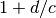
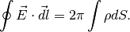
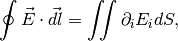
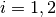

Fun¶
Here are some interesting physics related problems.
Quantum¶
Why Rutherford was wrong about the atom model?
Link to this: rutherford-atom
A Rutherford atom model is the combination of protons and electrons to give us a neutral nucleus.
Question 1: What is the energy of the electron if we confine it inside the nucleus? Consider only the kinetic energy due to uncertainty principle is enough to construct a contradiction.
Question 2: From the point of view of nuclear magnetic moment, the electron magnetic moment is way to large. Measurement tells us that nuclei usually have nuclear magnetic moment  to
to  where
where  and
and  is the mass of proton.
is the mass of proton.
Hint: The magnetic moment is of the magnitude  .
.
Relativity¶
Blazers in astrophysics
Link to this: Blazers
Blazers has a very large apparant velocity, which is usually much larger than speed of light, eg, 34c.
This problem is very nicely explained on this page: Apparent Superluminal Velocity of Galaxies .

This is taken form the link metioned above. We measure the distance at 1 Jan then at 1 Feb. The apparent velocity would be the travelled distance divided by 1 month. However, the first measurement only measured the light from a place that is  further than the second spot due the the fact that light travels at a finite speed. So the distance we measured is larger than the actual distance at 1 Jan and 1 Feb. Thus leading to a apparent larger velocity and this velocity can exceed the limit of light speed.
Electrodynamics in 2+1 Spacetime¶
Maxwell’s equations are mostly experiment determined, except for one term by Maxwell involves the induced current. The only hope to write down a real 2+1 electrodynamcs formalism is to really understand the most fundamental properties of electrodynamics which I don’t have at this moment.
So I turned to another approach. First of all we need to reach some basic agreement that which is not changed from our 3+1 theory to a 2+1 theory. As this being said, there could be a bunch of different versions of 2+1 theory.
To make sure we have a consistant theory, the following terms should be applied.
- Something should be unchanged which will act as a connection between our 2+1 theory and 3+1 theory.
Maxwell’s Theory
The equations could be written as

where  .
.
However we would like to check the four laws independently since we really need to look into the meaning of the equations.

Here we write down the component form because the cross product doesn’t have a clear meaning as we move to different dimensions.
The first naive version¶
Assumptions
- The dimension of energy is not changed.
- The dimension of length and time are kept.
Gauss’s Law¶
Gauss’s law shows the source of the electric field, which should be in the form

We have  instead of
instead of  is because we have only a integral of a closed loop not a closed surface.
is because we have only a integral of a closed loop not a closed surface.
Applying Stokes Theorem?
At first thought, we need to math the integral on the two sides thus Stokes theorem should be applied.
Surprisingly, we don’t really get to the familiar Gauss’s law of differential form. Instead, we have

BUT think about this. Is this really true? We DO NOT have a third dimension! How could we define a curl? Back to the component form,

As a reminder,

Now the problem is we have all the elements of this Levi-Civita symbol 0 because only 2 dimensions can be used in this theory.
That means we have no Gaussian theorem or no charge as a naive interpretation if we follow our idea that charge is source of static curl free electric field and followed up by using Stokes theorem.
This argument is WRONG. We need to reconsider the meaning of equations. This is 2D we don’t have a third dimension to use Stokes theorem. We need divergence theorem.
Two match up the dimensions we do need to apply the divergence theorem, in 2D.

from which we are able to determine the differential form

in which we have .
Vectors in 2D
TBD
Wave¶
We still have a wave solution.